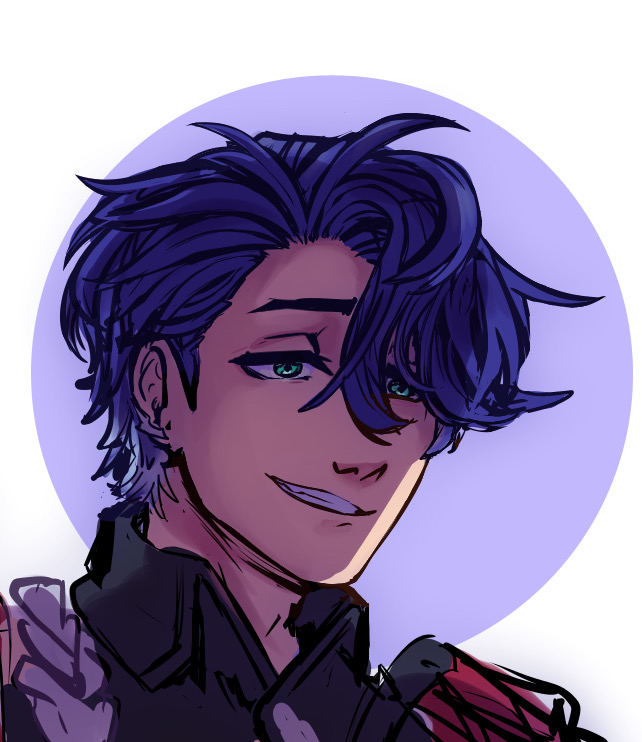

Sampo
- First appears on Jarillo VI
- Is obsessed with money and is a known con artist
- Is a Nihility character that specializes in wind DOT damage and decreases enemy DOT resistance
- Was able to freely traverse between the overworld and underground when transportation was cut off
-
(Spoilers for ending of the Belobog story arc)
Speaks to an unknown audience at the end of the Belobog story arc.
It is theorized that he may be part of the Stellaron Hunters or the Masked Fools.